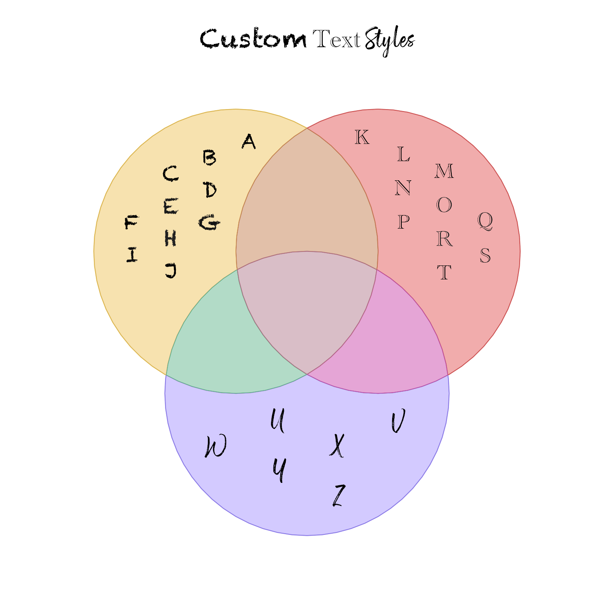
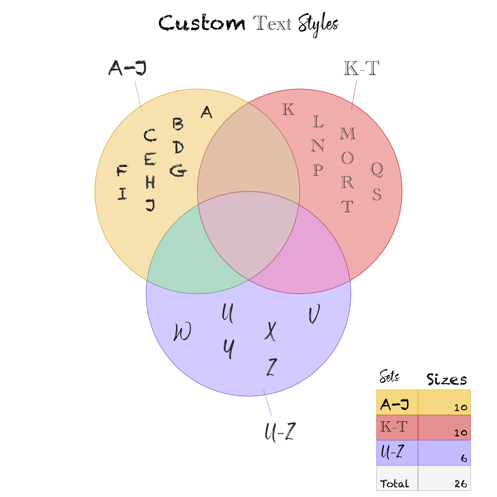
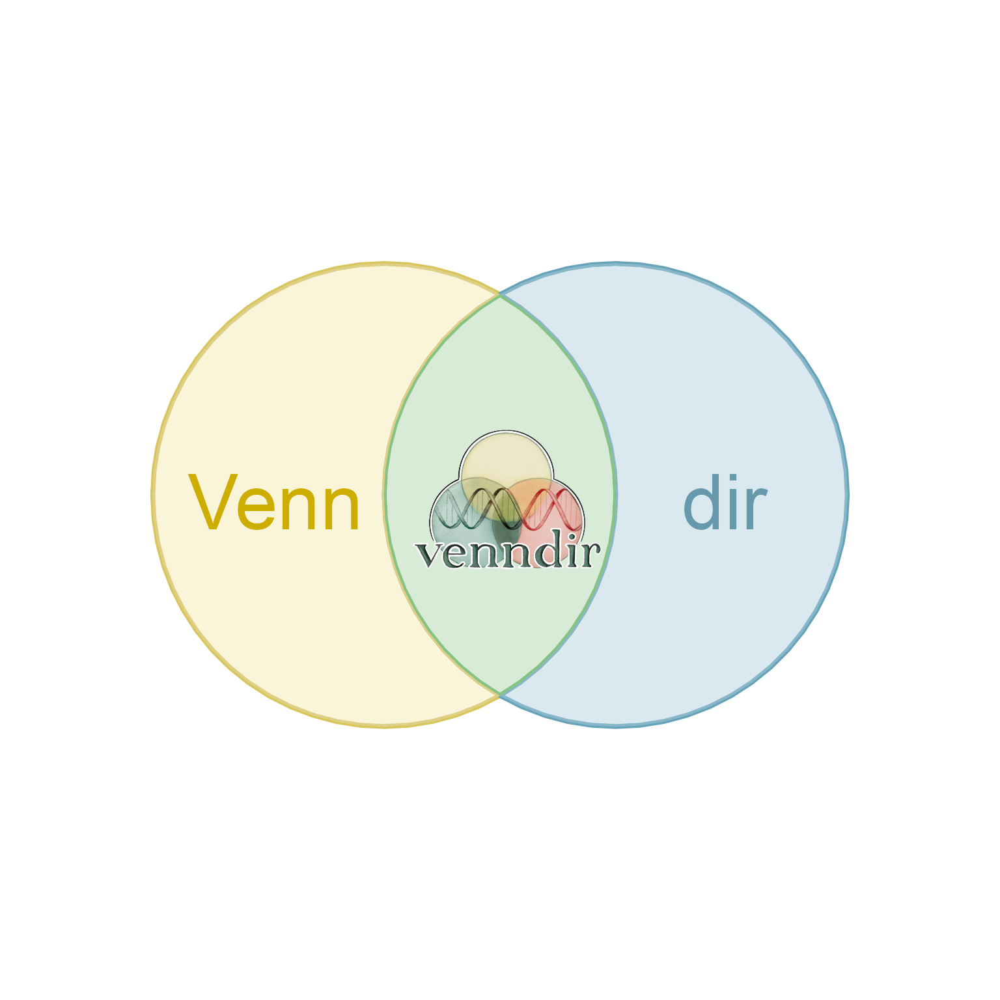

Combine marquee styles
Arguments
- mss
one of the following, default is NULL:
NULL, which calls
marquee::classic_style(...)as a convenient way to apply'...'arguments to create a new set of styles,marquee_style_setobject as created bymarquee::classic_style().listof namedmarquee_styleobjects, which will be used in place of what would otherwise bemarquee::classic_style()as a base set of styles.
- msl
listof namedmarquee_styleobjects, where each entry in the list is named by the inline tag to be defined. When provided as NULL, only the 'mss' argument values are used.- ...
additional arguments are passed to
marquee::classic_style()whenmssis NULL.
Details
This is a helper function to combine existing 'marquee_style_set'
together with a list that contains individual 'marquee_style'
objects.
Note that Venndir item labels may also define inline styles to
facilitate label "jittering" via arguments jitter_cex, jitter_color,
and jitter_degrees in label_fill_JamPolygon().
The inline styles are named 'rel.#' or 'rel.#.#' where the '#' are
integer index values. It is advised to avoid inline arguments
with these names.
See also
Other venndir advanced:
collapse_im(),
make_color_contrast(),
nudge_venndir_label()
Examples
new_style_set <- combine_marquee_styles(msl=list(
cursive=marquee::style(family="Above The Sky"),
larger=marquee::style(size=marquee::relative(1.2))))
mg <- marquee::marquee_grob("Text {.cursive in cursive}", x=0.5, y=0.5,
style=new_style_set);
grid::grid.newpage()
grid::grid.draw(mg)
mg2 <- marquee::marquee_grob("Text {.larger {.larger {.cursive in cursive}}}",
x=0.5, y=0.3,
style=new_style_set);
grid::grid.draw(mg2)
## custom styles for item labels
# define styles
ms <- list(
chalk=marquee::style(
family="Chalkduster",
weight="normal", width="normal",
size=marquee::relative(1.5)),
cursive=marquee::style(
family="Above The Sky",
weight="normal", width="normal",
size=marquee::relative(1.5)),
gothic=marquee::style(
family="AcademyEngravedLetPlain",
weight="normal", width="normal",
size=marquee::relative(1.5)))
# create labels
il <- split(LETTERS, rep(letters[1:3], c(10, 10, 6)))
# apply inline markup around each label
il[[1]] <- paste0("{.chalk ", il[[1]], "}")
il[[2]] <- paste0("{.gothic ", il[[2]], "}")
il[[3]] <- paste0("{.cursive ", il[[3]], "}")
# draw the rest of the owl
vm <- venn_meme(il, item_buffer=-0.05, marquee_styles=ms,
main="{.chalk Custom} {.gothic Text} {.cursive Styles}")

names(il) <- c("{.chalk A-J}", "{.gothic K-T}", "{.cursive U-Z}")
vm <- venn_meme(il, item_buffer=-0.05, marquee_styles=ms,
expand_fraction=0.02,
fontfamily="Chalkduster",
show_labels="Ni", draw_legend=TRUE,
legend_headers=c(Set="{.cursive Sets}", Size="{.chalk Sizes}"),
main="{.chalk Custom} {.gothic Text} {.cursive Styles}")

# example using an image
img <- system.file(package="venndir", "images", "venndir-transparent.png")
imgtag <- marquee::marquee_glue("")
# dontrun{} to avoid C grid warning on some devices:
# drawDetails.GridGroup(x, recording = FALSE) : Group definition failed
venn_meme(c("{.gold3 Venn}", "{.#6799AC dir}", imgtag),
item_cex_factor=c(1.5, 1.5, 7),
innerborder.lwd=1, outerborder.lwd=1,
poly_alpha=0.5,
set_colors=c("#EEDD79", "#87B9CC"))
#> Warning: Group definition failed

# This warning is apparently harmless